v41 目次のページが自動だと分かるように
心配：目次のページは、本文の見出しから自動で作ります。学生はここに書けません。「目次が壊れている」「さわれない」と思うのでは。
3つの案から1つ選んでください（組み合わせもできます）。
画面は本物のツールに、案の部分だけ書き足して写したものです（絵を押すと大きく見られます）。見本の原稿は、衣装コースの見本（文化花子）。

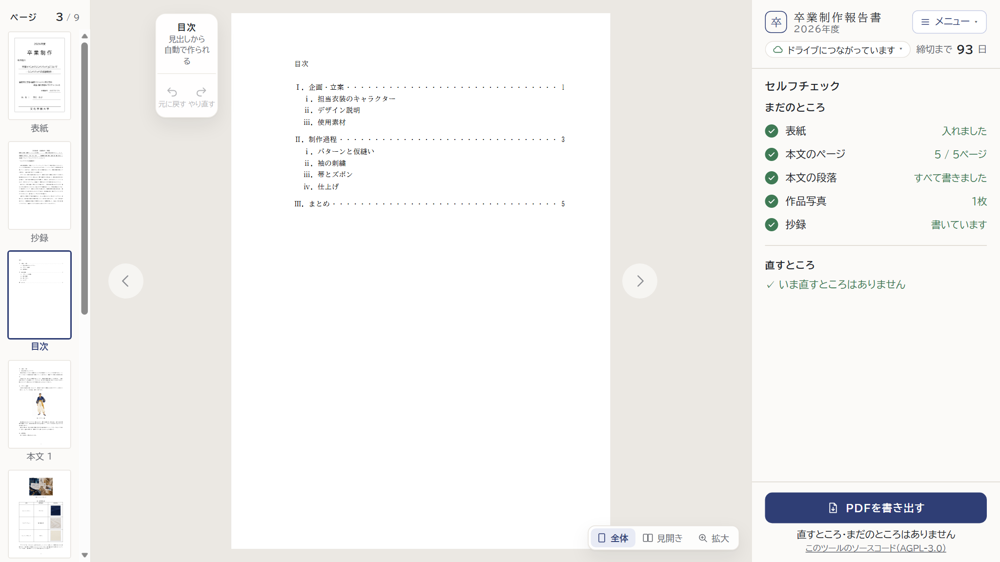
パソコン：紙面を押しても、何も起きない
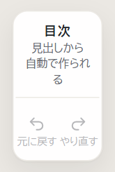

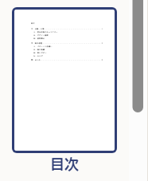
左の道具の上と、ページの一覧
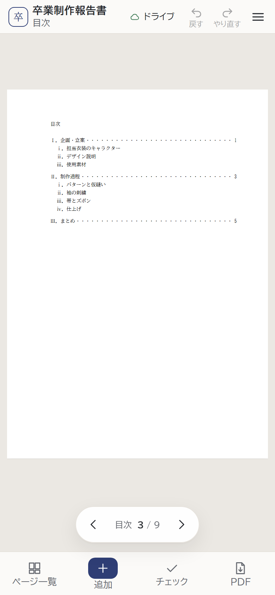
スマホ：帯は出ない左の道具の言葉は「見出しから／自動で作られ／る」と、「る」が1字だけの行になっています。
ページの一覧の名前は「目次」だけ。
スマホの紙面の下の帯は、目次のページでは何も出ません（まだ書いていない欄がないため）。
どの案でも同じ
- 左の道具の上：「目次」の下を 本文の／見出しから／自動で／作ります に。言葉の切れ目で分け、1字だけの行を作りません。
- ページの一覧の名前：目次（自動）
- 紙面の目次そのもの（PDF・印刷）は、いまのまま。

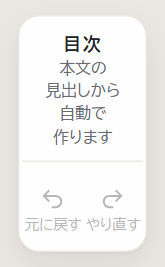
左の道具の上
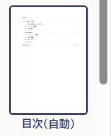
ページの一覧パソコン（1366×768）


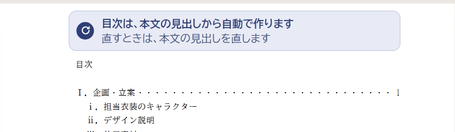
近くで：紙面の上の余白（題「目次」の上）に置きます目次は、本文の見出しから自動で作ります
直すときは、本文の見出しを直します
スマホ（390×844）


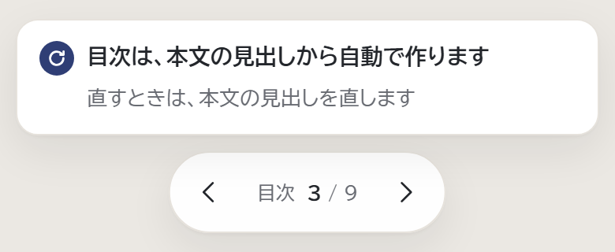
近くで：紙面の下の帯スマホは紙面の中の字が小さすぎて読めないので、紙面の下の帯に同じ言葉を出します（v32 の帯と同じ考え）。ボタンはありません。
よいところ
開いたらすぐ目に入る。作るのがかんたん。
開いたらすぐ目に入る。作るのがかんたん。
弱いところ
いつも出ているので、紙面がにぎやか。押しても何も起きないのは、いまのまま。
いつも出ているので、紙面がにぎやか。押しても何も起きないのは、いまのまま。


近くで（パソコン）

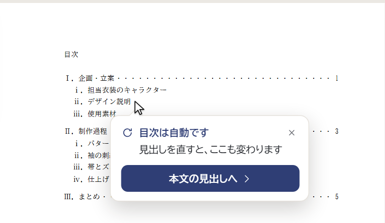
押した所のすぐ下に出ます。× か、ほかの所を押すと消えます目次は自動です
見出しを直すと、ここも変わります
［本文の見出しへ ＞］
目次の行を押しても、行のない所を押しても、同じ知らせです。
よいところ
ふだんの紙面は、いまのまま。押したときだけ、わけが出る。
ふだんの紙面は、いまのまま。押したときだけ、わけが出る。
弱いところ
押すまで分からない。「本文の見出しへ」では、押した行の見出しまでは行けない。
押すまで分からない。「本文の見出しへ」では、押した行の見出しまでは行けない。
パソコン（1366×768）

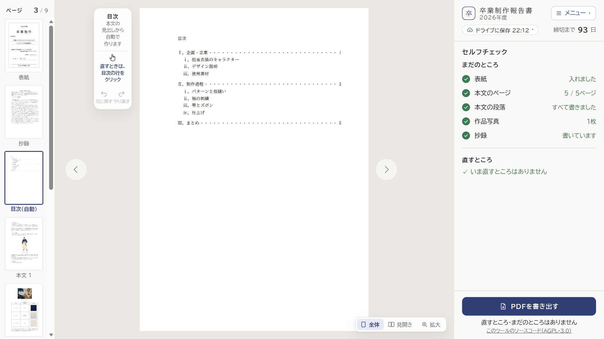
ふだん：左の道具に「直すときは、目次の行をクリック」
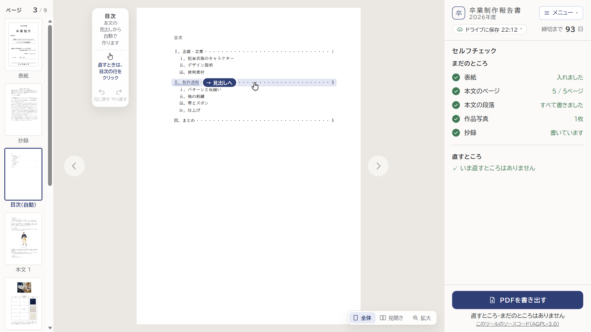
行にマウスを乗せたとき
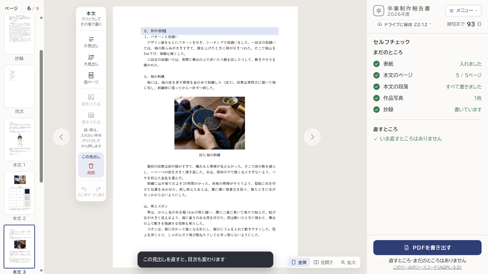
押したあと：本文 3 の「Ⅱ．制作過程」を書いているところ（本物のツールで移ったもの）近くで

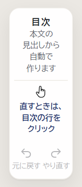
左の道具の上
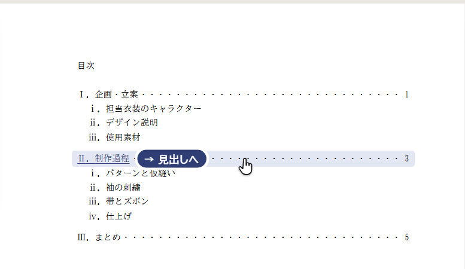
行の地がうすい色になり、見出しに下線と「→ 見出しへ」。行のどこを押しても移れます
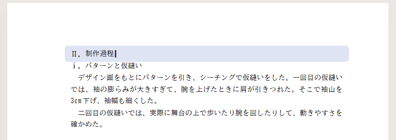
移った見出しが少しの間うすく光り、終わりにカーソル。すぐ直せます
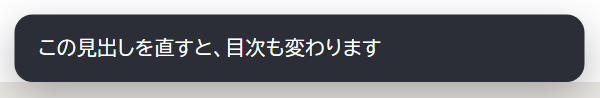
画面の下の知らせ（いまの知らせと同じ形）スマホ（390×844）

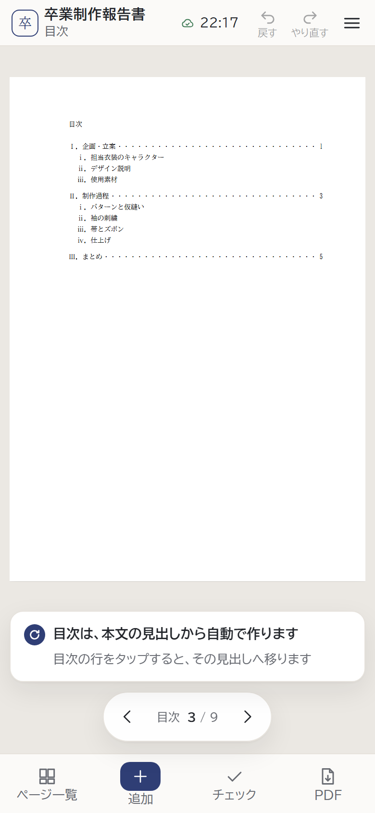
ふだん：帯に一言
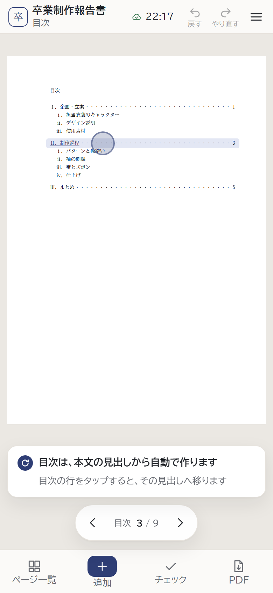
行をタップしたとき
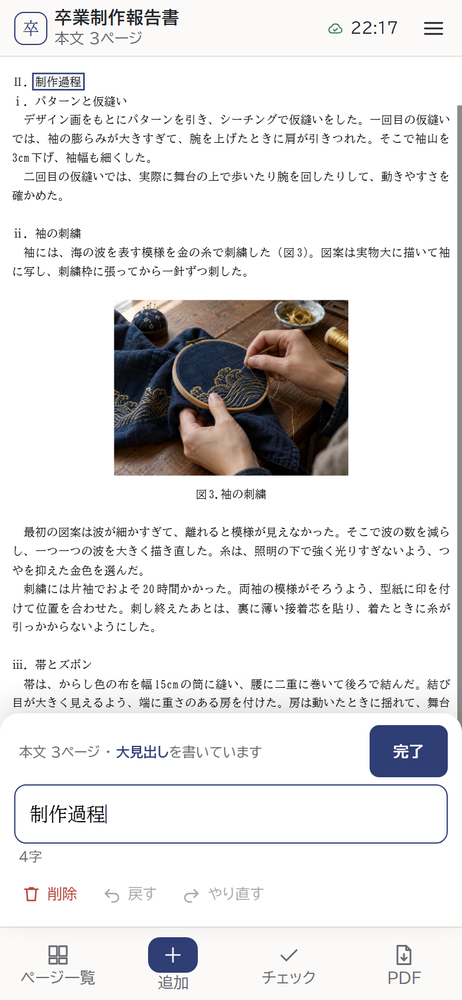
タップしたあと：見出しの書く欄が開く（本物）
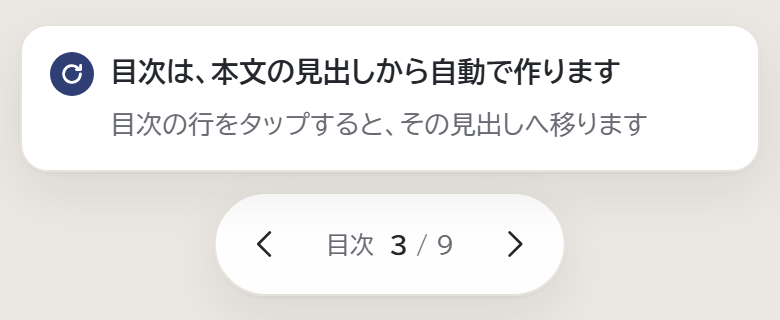
近くで：紙面の下の帯よいところ
押した行の見出しへ、そのまま行ける。押すと何か起きるので「さわれない」と感じにくい。
押した行の見出しへ、そのまま行ける。押すと何か起きるので「さわれない」と感じにくい。
弱いところ
作る手間がいちばん多い。見るだけのつもりで押しても、ページが変わる。
作る手間がいちばん多い。見るだけのつもりで押しても、ページが変わる。
言葉の表
| 場所 | いま | 案A | 案B | 案C（おすすめ） |
|---|---|---|---|---|
| 左の道具の上 （／は行の分け目） | 目次 見出しから／ 自動で作られ／る | 目次 本文の／見出しから／ 自動で／作ります | （案A と同じ） | 目次 本文の／見出しから／ 自動で／作ります ＋ 直すときは、／ 目次の行を／クリック |
| ページの一覧 | 目次 | 目次（自動） | 目次（自動） | 目次（自動） |
| 紙面（パソコン） | （なし） 押しても何も起きない | 目次は、本文の見出しから 自動で作ります 直すときは、本文の見出しを 直します | 押すと： 目次は自動です 見出しを直すと、ここも変わります ［本文の見出しへ］ | 行にマウス：→ 見出しへ 押したあと： この見出しを直すと、 目次も変わります |
| スマホの帯 | （出ない） | 目次は、本文の見出しから 自動で作ります 直すときは、本文の見出しを 直します | （出ない） タップすると、パソコンと 同じ知らせ | 目次は、本文の見出しから 自動で作ります 目次の行をタップすると、 その見出しへ移ります |
決めていただきたいこと
- 案A・案B・案Cのどれにしますか。（おすすめは案C）
- 案C のとき、行のない所（紙面の下の白い所）を押したら、案B の小さな知らせも出しますか？（出さなければ、いままでどおり何も起きません）